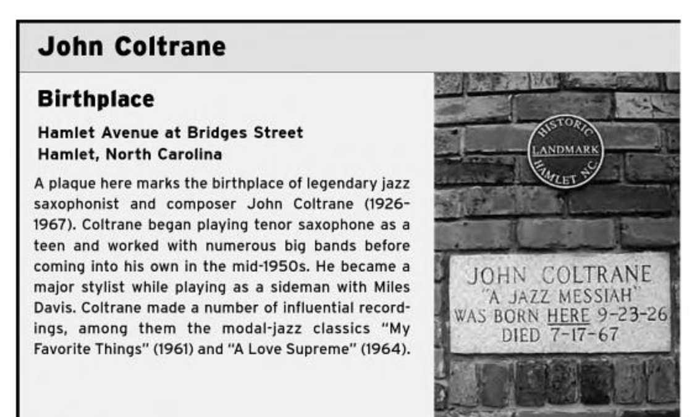
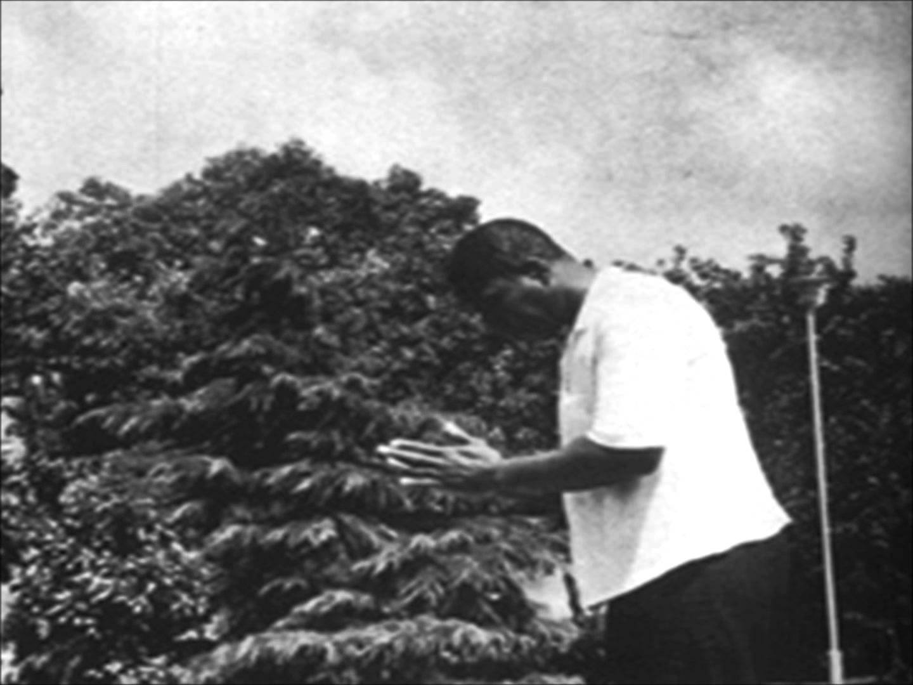

Biography Location
Composed by Coltrane
Composed by other
Mapping Coltrane
John Coltrane is one of the biggest names in music history, and is considered to be one of the greatest jazz saxophonists of all time.
From humble beginnings in the South, Coltrane moved to the Northeast, began playing with well-known jazz contemporaries, made a name for himself, and gained global fame. During the later years of his career, Coltrane drew influence from music around the world, namely African, Indian, and Latin American music.
Through mapping his life and music, we can see the breadth and reach of his work as well as the trends that defined his career.
Click on a location marker to learn more about the life and music of John Coltrane,
or use the arrows to navigate chronologically.
Sources
Hamlet, North Carolina
Date: September 23, 1926
John Coltrane was born in Hamlet, North Carolina on September 23rd, 1926. This location marks the apartment in which Coltrane’s parents had been living for about a year. This building was preserved for several years by Dr. Fred McQueen, but has since been renovated. A plaque now commemorates Coltrane’s birthplace.
References: [7]
Philadelphia, Pennsylvania
Date: May, 1943
Coltrane moved into this Philadelphia apartment in 1943 after graduating high school. He lived here with his mother, his friend, his cousin Mary, and her mother. It was in Philadelphia that he first began taking gigs as a saxophonist. Coltrane also attended after-hours jam sessions at clubs frequented by such jazz legends as Duke Ellington and Coleman Hawkins.
References: [7]
Oahu, Hawaii
Date: August, 1945
Coltrane enlisted in the Navy in 1945, just before his 20th birthday. He was discharged about a year later, but spent his military stint stationed in Oahu, Hawaii. Coltrane’s earliest confirmed recordings were created here at a military radio station. The other musicians were all fellow members of the Navy.
References: [7]
Philadelphia, Pennsylvania
Date: July 24, 1952
Coltrane purchased a house in the Philadelphia Strawberry Mansion neighborhood at the age of 25. He held jam sessions here that were attended by Dizzy Gillespie, Charlie Parker, and Sonny Rollins. This house is now considered a historical landmark, but has recently fallen into disrepair. Here, Coltrane recorded such albums with Miles Davis as Round Midnight, Relaxin', and Workin'.
References: [7]
Värmland County, Sweden
Recorded: June 5, 1956
Song: Dear Old Stockholm
This traditional Swedish song from the 1840s was originally known as “Ack Värmeland, du sköna", which translates to “Oh Värmland, You Lovely”. Several other jazz musicians adopted this song and recorded their own versions, including Stan Getz and Miles Davis. The unique melody from traditional versions can clearly be heard in Coltrane’s rendition.
Dear Old Stockholm - John Coltrane
References: [1] [9]
Money, Mississippi
Recorded: May 31, 1957
Song: Bakai
The title of this song, originally composed by Calvin Massey, means “cry” in Arabic. It was written in response to the murder of Emmett Till, a young African-American boy who was killed for supposedly whistling at a white woman in Mississippi. This song marks one of the first in a trend of Coltrane responding to relevant American and world issues through his music.
Bakai
References: [1] [10] [11]
West 103rd St., New York City
Date: August 23, 1957
Coltrane moved to this apartment in 1957 at the age of 30. He lived here with his wife, Naima, and his daughter Saeeda. Some of his most famous albums were recorded while he lived here, including Blue Train and Giant Steps.
References: [7]
Paris, France
Recorded: December 20, 1957
Song: Under Paris Skies
This song was originally written by French composer Hubert Giraud for the film Sous le ciel de Paris. It was later performed by many American artists, including the Ray Draper Quintet featuring John Coltrane. The melody is reminiscent of neo-classical French music
References: [1] [12]
Five Spot Cafe, New York City
Date: July - December, 1957
In late 1957, Coltrane joined Thelonious Monk and played in his quartet at the Five Spot Cafe in New York City. A few recordings have been released of Coltrane at the Five Spot, including one recorded by Coltrane’s wife, Naima, titled “Live at the Five Spot - Discovery!”.
Trinkle Tinkle - Thelonious Monk and John Coltrane
References: [2]
Talachyn, Belarus (formerly USSR)
Recorded: February 7, 1958
Song: Russian Lullaby
This song was composed by the legendary Irving Berlin, who was born in what is now Talachyn, Belarus (formerly a Soviet state). The original lyrics hint at the oppressive nature of Russia, and yearn for “a land that’s free for you and me”. This song was adopted by Jerry Garcia, who often performed it live, as well as Coltrane in his 1958 album Soultrane.
Russian Lullaby - John Coltrane
References: [1] [13]
Accra, Ghana
Recorded: June 24, 1958
Song: Gold Coast
This song, named after the British colonial title for Ghana, was composed by Curtis Fuller. It is the second track on Coltrane’s collaborative album with Wilbur Harden, titled Gold Coast. The drummer, Art Taylor, provides percussion that is distinctly African in its influence, before leaning into a more standard jazz feel.
Gold Coast
References: [1] [14]
Dar es Salaam, Tanzania
Recorded: June 24, 1958
Song: Tanganyika Strut
This song, written by Curtis Fuller, is the first track on the record Gold Coast, a collaborative effort with Wilbur Harden. The title refers to the sovereign state that comprised much of modern-day Tanzania. While the song itself is a straightforward jazz tune, the album itself is conceptually tied to Africa, along with all the track titles.
Tanganyika Strut
References: [1] [14]
Salvador, Bahia
Recorded: December 26, 1958
Song: Bahia
This Brazilian song was written by Ary Barroso in 1938, and was originally titled Na Baixa do Sapateiro (In the Shoemaker’s Hollow). This title comes from a street in Salvador, Bahia where many cobblers worked. Salvador is home to the highest percentage of Afro-Brazilians in Brazil, and remains a hub for for many African cultures and traditions.
Almost 40% of slaves captured from West Africa were sent to brazil, and many were processed through Bahia. This ode to Bahia features a distinct samba feel, a staple of Brazilian music.
Bahia
References: [1] [14] [20]
Central Park West, New York City
Recorded: October 24, 1960
Song: Central Park West
Recorded in 1960 for his eventual 1964 album Coltrane’s Sound, Coltrane’s Central Park West “encapsulates a lazy, meditative walk through Manhattan’s garden retreat”. At the time of recording, Coltrane had just moved out of his apartment located on West 103rd Street, not far from the titular avenue.
References: [1] [15]
Monrovia, Liberia
Recorded: October 26, 1960
Song: Liberia
This song appeared on Coltrane’s 1964 album Coltrane’s Sound, and was recorded in 1960. Throughout the song, drummer Elvin Jones utilizes colorful percussive elements reminiscent of West African rhythms. Although it is not overtly influenced by African music, it is one of the many Coltrane pieces that is a tribute, in name, to African cultures.
References: [1] [14]
Africa/Dial Africa
Recorded/Debuted: June 24, 1958 - May 23, 1961
Songs: Africa, Dial Africa
Perhaps the biggest culmination of Coltrane’s African influence was his 1961 conceptual album Africa/Brass. It is perhaps his most adventurous album, featuring a full big band orchestra. His use of African rhythms throughout, and specifically on the titular track, Africa, was inspired by his friend, Yoruban percussionist, Babatunde Olatunji.
Wilbur Harden’s Dial Africa was recorded by Coltrane in 1958, and carried a similar conceptual weight. Coltrane’s African influence can also be seen through his spirituality, with Coltrane citing Olatunji and African cultures as influential in that regard.
Africa
References: [1] [2] [8] [14]
Church Creek, Maryland
Recorded: May 23, 1961
Song: Song of the Underground Railroad
Coltrane’s recording of this traditional spiritual appeared on a 1961 reissue of his conceptual album Africa/Brass. This location marks the birthplace of Harriet Tubman, which is now the “Harriet Tubman Underground Railroad National Historical Park”. Coltrane, once again, showcases the influence of African and African-American culture on his music.
Song of the Underground Railroad
References: [1] [14]
Abomey, Benin
Recorded: May 25, 1961
Song: Dahomey Dance
This song is an ode to the Kingdom of Dahomey, which is now known as the Republic of Benin. Prior to European colonization and the slave trade, Dahomey was closely tied to the Yoruba Empire, which became very important to Coltrane later on in his career. The Kingdom of Dahomey produced a vast amount of architecture, art, literature, dance, and music.
Dahomey Dance
References: [1] [14]
Andalusia, Spain
Recorded: May 25, 1961
Song: Ole
This song is the title track off Coltrane’s 1961 album Ole. It is on this track that Coltrane’s interest in Spanish music is most apparent. The structure of this song is borrowed from the Andalusian song El Vito.
The song features a recurring ostinato theme, over which Coltrane plays modal riffs (a mixture of harmonic minor and phrygian) that are distinctly Spanish. It was during this time period that Coltrane began to play more modally, inspired by both Spanish and Indian music.
Ole
References: [1] [16]
Varanasi, India
Recorded: October 21, 1960 - October, 1965
Songs: India, Om, My Favorite Things
In the early 1960’s, Coltrane’s music began to take a dramatic turn away from harmonic emphasis and playing over standard chord changes to modal playing and emphasis on interesting melodies. Integral to this shift was Coltrane’s interest in the music of Ravi Shankar. Shankar, noted for popularizing Hindustani (North Indian) music in America in the 60s, helped Coltrane integrate classical Indian techniques into his music. This location marks the birthplace of Shankar.
Three notable songs that utilize Indian devices are India, Om, and My Favorite Things. India, based on a recorded Vedic chant, was first played at the Village Vanguard in 1961, and showcases a huge emphasis on Indian modes and “ragas” (melodic concepts).
Om, which refers to the sacred syllable used in Hinduism, was recorded in 1965, and is overt in its integration of Indian religion. It is said that Coltrane’s intention with his “modal phase” and use of Indian motifs is to expand the listener’s consciousness.
My Favorite Things, a rendition of the famous Hammerstein and Rodgers tune, uses drone tones and modality to inspire a Hindustani feel. The song begins in E minor, but shifts to E major for the solo section, over which Coltrane plays stunning modal riffs.
India
Om
My Favorite Things
References: [1] [2] [3] [4] [5] [6] [8]
Brasilia, Brazil
Debuted: November 1, 1961
Song: Brasilia
Coltrane’s ode to the Brazilian capital was recorded at the Village Vanguard in 1961, yet there is some uncertainty as to who composed it: Coltrane or his fellow performer Eric Dolphy. Musical devices reminiscent of Schoenberg appear in the track, which Dolphy was interested in. Nevertheless, several Latin American musical devices, specifically rhythmic ones, appear throughout Brasilia.
Brasilia
References: [1] [17]
Village Vanguard, New York City
Date: November 1-5, 1961
In October of 1961, Coltrane began a residency with his quintet at the Village Vanguard in New York City, a famous venue. On November 2nd and 3rd, Coltrane’s sets were recorded and compiled into his first live album Coltrane “Live” at the Village Vanguard. This era marked a new, more experimental direction in which Coltrane took his music.
Spiritual - Live at the Village Vanguard
References: [1] [2]
Nagasaki, Japan
Date: July, 1966
In 1966, Coltrane went on a tour in Japan, noted for his energy and passion throughout. Not only did Coltrane play peaceful songs such as Peace on Earth, but he also visited visited the Nagasaki war memorial to pray for the dead. Coltrane and his tour, to this day, serve as a landmark of peace and healing and Japan.
References: [1] [2] [18]
Ancient Yoruba (now Nigeria)
Performed: April 23, 1967
Song: Tunji
Coltrane dedicated this song to his good friend Babatunde Olatunji, a Nigerian Yoruba percussionist. This location marks the birthplace of Olatunji. Coltrane later helped Olatunji open an African cultural center in Harlem, which was the site of Coltrane’s last live recording, at which he played this song.
Tunji
References: [1] [8] [14]
Birmingham, Alabama
Recorded: November 18, 1963
Song: Alabama
This poignant piece was recorded in 1963 commemorating the 16th Street Baptist Church Bombing in Birmingham, Alabama, which killed four people. This event helped galvanize the Civil Rights Movement. This recording is considered one of the most prolific in jazz history.
Alabama
References: [1] [14] [19]
Long Island, New York
Date: July 6, 1964
Coltrane and his wife Alice (he and Naima had divorced) moved to this Long Island house in 1964. It was in this home that Coltrane composed the music for the album A Love Supreme. In 2004, the Huntington Society purchased the house to save it from demolition. The “Coltrane Home” is now a non-profit organization.
References: [7]
Lojoka, Nigeria
Recorded: March, 1967
Song: Ogunde
This song was recorded in March of 1967, just a few months before his death. It is dedicated to the Yoruba deity, Ogun, the god of iron, metal, and war. The song was inspired, in part, by his relationship with Olatunji, who was Yoruba. This location marks Lojoka, which was once home to the Yoruba people.
Ogunde
References: [1] [14]
Huntington, New York
Date: July 17, 1967
Coltrane died on July 17, 1967 at Huntington Hospital in Long Island. The cause of death - liver cancer - is attributed to hepatitis and heroin use. Coltrane’s death came as a surprise to many in the music industry who had not known about his sickness. He is buried at Pinelawn Cemetery in Farmingdale, New York.
References: [1] [7] [21]